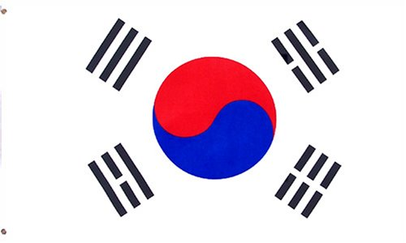
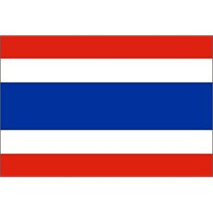

CULTURAL FOODS
A recipe has no soul,
you as the cook
must bring soul to the recipe.
Japan

Main
Chicken Katsu
Dessert
Green tea Mochi
Drink
Calpis drink
Mexico

Main
Enchiladas
Dessert
Mexican Flan
Drink
Horchoto
Phillipines
Main
Chicken Adobo
Dessert
Ube Halaya
Drink
Green Mango Shake
Korea

Main
Kimchu Soondubu Jjigae
Dessert
Sweet Baked Pastry
Drink
Banana Milk
Samoa
Main
Fa,alifu coconut sauce
Dessert
Banana Bread
Drink
Vaimeleni Watermelon drink
India

Main
Punjabi Chicken
Dessert
Gulab Jamun
Drink
Chai Tea
Thailand

Main
Tom Yum Goong
Dessert
Mango Layer Cake
Drinks
Cha Yen
New Zealand
Main
Fish and Chips
Dessert
Kumara Pudding
Drink
Tea and coffee